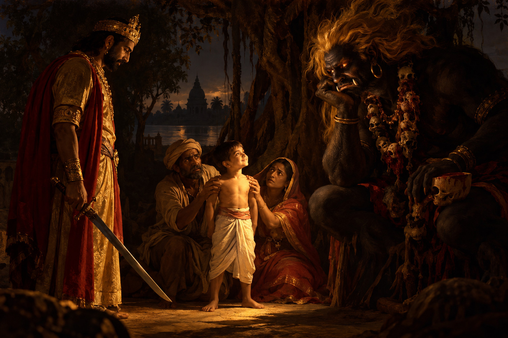

Laughter

Once upon a time, there was a king named Chandrâvaloka.
He was a young and prosperous ruler who lacked only one thing: a wife…
One day, he went hunting in the forest, ventured deep into the woods alone, and eventually lost his way.
After wandering for a long time, he came to a lake.
There, beneath a tree, he saw a young woman of extraordinary beauty.
Her name was Indîvaraprabhâ, and she was the daughter of a hermit.
The king went to the hermit and asked for his daughter’s hand in marriage.
The hermit agreed on one condition: the king had to make a solemn promise that he would give up hunting from that day forward and protect living creatures instead of killing them.
The king promised, and the marriage was celebrated.
On their way home, they stopped beside a lake and slept beneath a great tree.
But early the next morning, a demon appeared before them, black as soot, with hair as yellow as lightning. Around his neck he wore a garland of entrails; he chewed human flesh and drank blood from a skull.
He let out a dreadful laugh.
— Wretch! This tree is my dwelling, and you dared spend the night here with your wife. I will tear out your heart, devour it, and drink your blood.
Terrified, the king begged for mercy.
— Forgive me. I did not know this place belonged to you. Let me go, and I promise to bring you a human victim whose flesh you may eat.
The demon agreed, but set his conditions:
— You must find a seven-year-old boy. His father and mother must hold him down, one by the hands and the other by the feet. And you must cut off his head with your own sword.
If you do not bring him to me within seven days, I will kill you and your entire court.
The king agreed.
Back in his capital, he told his ministers what had happened.
One of them came up with the idea of having a statue of a seven-year-old child made entirely of gold and covered with precious stones. It was then carried through the towns and villages while men proclaimed loudly:
— If a seven-year-old boy is offered to the demon for the good of all, and if his father and mother agree to hold his hands and feet while he is killed, the king will give his family this statue of gold and precious stones, along with a hundred villages.
In one town lived a family so poor that the parents could no longer feed their children. They told themselves that by sacrificing one of them, they would save all the others. And so they gave one of their sons to the king.
On the seventh day, the king took the child and his parents to the demon’s tree
The demon appeared, terrifying, drunk with blood, his eyes blazing.
The king bowed before him.
— I have brought you the human sacrifice I promised you.
The demon looked at the child and licked his lips.
The child was placed before the demon.
His mother seized his hands.
His father seized his feet.
The king drew his sword and prepared to kill him…
At that moment, the child began to laugh.
Everyone stopped.
Even the demon.
— Tell me, why do you laugh at this terrible moment, when you are about to die?
The child replied:
— When a child is in danger, he naturally calls upon his father or mother for help. If his parents cannot save him, he seeks the protection of the king, whose duty it is to help those in distress. And if the king himself can do nothing for him, he turns to the deity under whose protection he lives.
My parents are holding my hands and feet.
The king is about to kill me to save his own life.
No deity has appeared.
Only the demon to whom I was offered still hesitates to devour me.
That is why I laugh…
An Indian tale, freely adapted from the Vetālapañcaviṃśati by Frodric
Translated into English by ChatGPT
About this tale
This tale is freely adapted from an episode of the Vetālapañcaviṃśati (“The Twenty-Five Tales of the Vetāla”), an ancient Indian collection that exists in many different versions.
In one of the best-known versions, transmitted in the eleventh century by Somadeva in the Kathāsaritsāgara, the child willingly agrees to be sacrificed. In other versions, his parents are the ones who give him up.
Échos
Cette histoire vous en a-t-elle rappelé une autre ? Vous pouvez me la raconter ici.